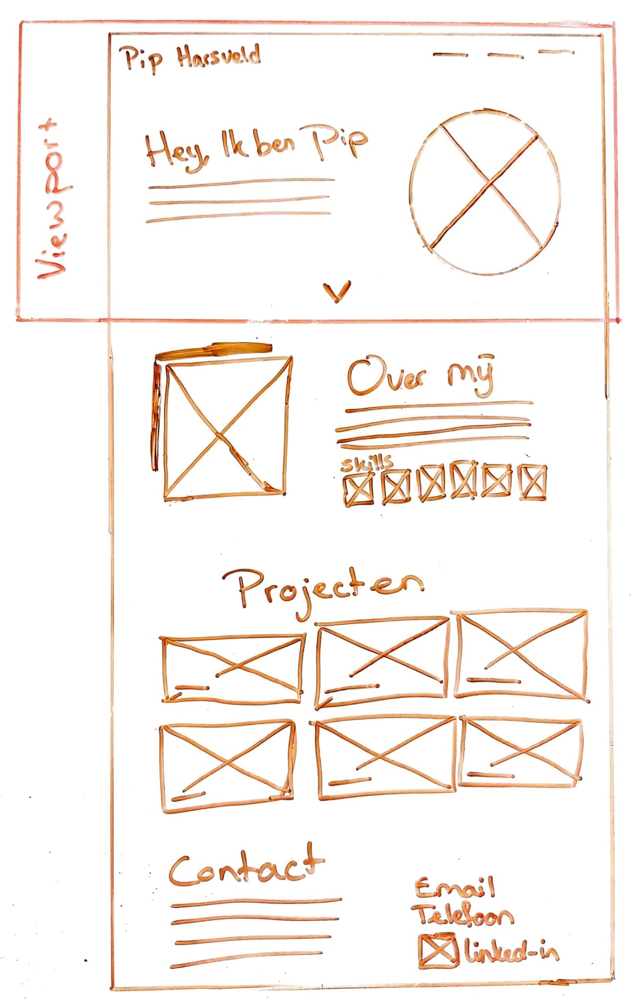

Portfolio
De opdracht
Om mezelf als designer en developer goed neer te zetten, wilde ik graag een portfolio maken waar een selectie van mijn projecten te zien zijn.
Mijn invulling
Ik ben begonnen met het opdoen van inspiratie op internet en het maken van een soort moodboard. Vervolgens heb ik schetsen gemaakt en heb ik het design uitgewerkt in adobe XD. Tot slot ben ik alles gaan coderen en het resultaat is hier te zien op pipharsveld.nl.
 Bekijk de code